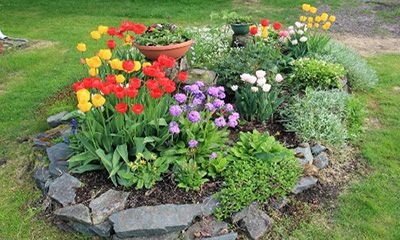

Цветна леха
Цветята са едно от нещата,които ни карат да се усмихваме. Едно от нещата,които ни правят щастливи. Ако искате след дългата зима да имате красива пролетна градина трябва още есента да засадите луковиците на пролетните цветя.Те ни радват с красивите си цветове, които се появяват от ранна пролет до късна есен. Вероятно няма човек,който да не се възхищава на цъфналите кокичета и да не ги свързва с отиващата си зима.
Ето кратък списък на някои цветя не само луковични,които трябва да засадите през септември и октомври/
- Кокиче
- Минзухар
- Лале
- Нарцис
- Зюмбюл
- Иглика
- Теменужка
- Момина сълза